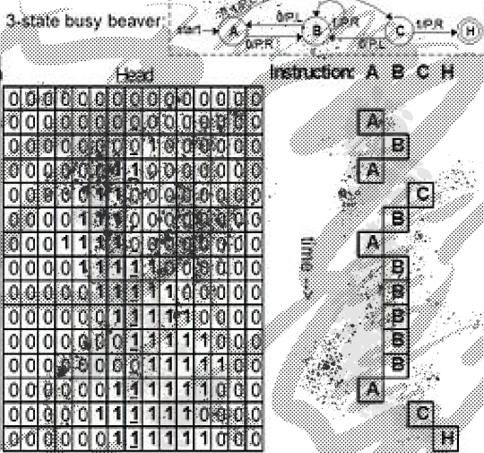

The creator of Underload and dozens of other languages, ais523 has endless curiosity in his attempt to find the “essence of programming.” I first interviewed ais523 in 2011, the second interview in a series that would become esoteric.codes. In the six years that have passed, he has released a great many languages, particularly a run of new work in 2015 exploring extreme minimalism, the Minsky machine, and a deletionist model of computation.
» Three Star Programmer feels more purely single instruction than many OISCs, which sometimes create a complex composite instruction in order to make them usable; here you seem to have opted for simplicity and elegance, possibly at the cost of Turing Completeness. However, on the wiki there’s a note that “ais523 has been looking to make an esolang in which structured programming is impossible and every program has to be written from scratch,” so perhaps this was the genesis of this language. Since 3 programs seem like they would quickly become tangles of pointers, what approach would you take to attempt coding it beyond the “print all ascii” example?*
The story behind Three Star Programmer is actually quite different from how it ended up eventually turning out. I originally set out to make an entirely analog programming language in which memory was continuous, addresses were approximate, etc.. The hard part of a language like that is not so much storing the data, as retrieving it; the normal way you read memory in a programming language (especially a tarpit) is with a control flow construct, which sends execution down one of a finite number of paths depending on the value that memory has. (Most familiar control flow commands like «if» and «while» work like this.) However, that’s an inherently digital/discrete thing to do.
I didn’t want to have to make the program continuous/analog too, so instead I wondered whether it would be possible to just design the language so that it operated via continuously writing. Writing a single memory address directly doesn’t really work, and writing with one extra level of indirection means that you can only read finitely many addresses (not very useful). There’s no such problem if you add an additional level of indirection above that, though.
This idea was interesting enough that I made it into a language by itself; when you have a new idea it’s often worth seeing how it works on its own before trying to combine it with other things. I also had the perfect idea for a name for it, which always helps. The language wasn’t intentionally designed to be difficult to program in or to reduce into something more structured; it just happened that way, and took on a new life of its own independent of the way it originally came about.
Initially I was just as baffled as everyone else by the language, but the difficulty mostly comes from the “where do you even start?” reaction that you get upon seeing a language like that. When I started working on it more seriously, I started off from the point of view of “well, imagine you can initialise memory to something other than all- zeroes, what would you do with it?”. At that point, it becomes clear that you can use the three levels of indirection to simulate one or two levels of indirection; just have some “fixed” memory addresses that never change. If I want to increment *6, for example, I can do it by having *10 always point at 6, and *20 always point at 10; that way, doing ++***20 is equivalent to ++**10, or ++*6. And the vast majority of your program only needs one or two levels of indirection; the third level is only used if you want to read a data of unbounded size.
Because values in this language can only be incremented, the obvious data structure to use is a queue (both because the way you push onto and pop from a queue are to increment the head pointer and tail pointer respectively, and because that means that the structure keeps “moving to the right” in memory and thus keeps getting new fresh values to work with). So it was a case of working out how to set up a cyclic tag to “freestart 3*” compilation.
Once you work out how to do the program with preinitialised memory, it collapses to the separate problem of working out how to do it starting from all zeroes, but it turns out that that isn’t all that hard either; the only real difficulty is ensuring that your initialisation code effectively only runs once. My solution to that was to use only even tape elements for the actual programming, and do the initialisation indirectly via a pointer which was even on the first iteration, but odd on the others; that way, the initialisation code ends up uselessly adjusting odd tape elements on subsequent iterations. This worked out really neatly due to the extra level of indirection that was available.
I kind of lost interest in the language once I realised it was probably Turing-complete, which reminded me that I’d never actually posted my sketch proof to the Esolang wiki. I’ve done that now.
» While it seems you’ve been active working on esolangs continuously, there was a burst of new languages in 2015 along a number of different thematic lines, some more sketches and others fully fleshed out; could you tell us a bit about how this developed and what you were excited about at the time? Also, I’d like to ask specifically about the appeal of Minsky machines; you had (at least) three languages built on that computational approach.
One thing that I’ve been focusing on over the last few years is trying to find the “essence of programming”, in the sense of “what do you need to describe a program?”. There are two ends to the problem. At the time, I was working at the low-level end, where the basic problem is “how simple can a language be to describe while still being completely general?”. (Recently I’ve been more focused on the other end, “how do you write a language where all programs are simple to describe?”, but it obviously leads to much larger and more complex results, meaning that there isn’t really anything finished in that respect.)
Three Star Programmer was, as mentioned above, originally a subset of a much more complex language, but was interesting in its own right in several ways (sort of like what happened with Underload, actually, which was also a subset extracted from an unfinished, much more complex language). One of the notable properties of Three Star Programmer is that it’s a fairly simple language in the sense that it allows very short implementations. I’ll use Perl as an example of an implementation language (because I’m experienced with writing short programs in it); allowing for minor syntactic changes, you can do it in 26 bytes + the «-a» command-line option:
++$a[$a[$a[$_]]]for@F;redo
The niceness of a language that has a very simple implementation like this is that it’s easy to precisely specify how it works in both However, one fundamental problem with trying to get a language as simple as possible is that you still need to keep track of the program, data, and instruction pointer separately (in the above implementation, these are «@F», «@a», and «$_»), which places a limit on how simple the program can be.
This eventually lead to the concept of a ZISC (Zero Instruction Set Computer), which has even fewer instructions than an OISC; the program is entirely implicit and just runs the same transformation on memory again and again, and in order to actually program in the language, you specify the initial state of memory. I started off along the lines of Three Star Programmer and then that even just one level of indirection might potentially be enough, meaning that you can produce a considerably simpler language description:
{$i=$F[$i]++;redo}
Is this Turing-complete? It’s a much harder problem than with Three Star Programmer. The first problem was to work out how the language actually operates (it turns out to have a pretty regular structure, Last ReSort), and then to work out what sort of languages it could implement. The key to Last ReSort is that it’s a language where the operations you have available are incrementing and sorting, so the only “interesting” points in program behaviour are those where one of the values overtakes another (meaning that they sort into a different order). So it’s actually the differences between elements that matter, and incrementing an element thus increments or decrements a difference, with special behaviour when the difference equals 0. Huh, that sounds awfully like a Minsky machine, doesn’t it?
So I ended up creating The Amnesiac From Minsk (level 4), but it turned out to be too difficult to make much headway on it. I created a few easier versions to practice on, especially as they turned out to be useful for Turing-completeness proofs in their own right. Typically when you’re trying to prove a language Turing-complete you’re trying to compile programs in some very simple language (such as Minsky machines or cyclic tag) into it. Cyclic tag’s about as simple as it can get already, but Minsky machines aren’t; they have the “issue” with respect to simplicity that they can change data, and yet still remember where they were in the program. This causes problems when trying to compile them into languages which have weird restrictions.
As such, TAFM is basically exploring simpler, restricted Minsky machines that are easier to compile into very restricted languages, in order to help write Turing-completeness proofs:
At level 1, we don’t require the interpreter to be able to remember why it incremented or decremented a counter; all it needs to know is what operation it just performed, and it’s the program’s responsibility to work out why. For example, Incident is very bad at copying or destroying data, and incrementing a counter whilst keeping track of your location is an easy way to copy the instruction pointer, so it doesn’t easily compile into Incident. The language is still Turing-complete.
At level 2, we let the interpreter forget even more state; if a counter gets sent “into the negatives”, a Minsky machine will just increment it back to 0, but at level 2 we don’t require the TAFM interpreter to be able to remember that it incremented the value back to 0 because it went negative rather than because the program requested an increment. In other words, the language is getting less and less stateful (thus making it easier and easier to implement in restricted languages). The language is still Turing-complete.
At level 3, the interpreter no longer has to remember whether it just did an increment or a decrement (rather, decrements have increments as a side effect). Less state, easier still to implement. Is it still Turing-complete? Who knows? (I haven’t made any progress on this.)
Level 4, where the interpreter doesn’t even have to remember which of the nearby counters it was dealing with, is on the order of Last ReSort’s power. No wonder I couldn’t make any progress on this.
It’s worth noting that this general aim towards making languages designed for use proving TCness ended up paying off; TAFM level 1 allowed me to prove Kangaroo Turing-complete, and the current record holder for the shortest Turing-complete language implementation in a high-level language is based on it.
Anyway, this focus on Minksy machines for TCness proofs ended up leading to a focus on Minsky machines more generally. For example, I started working on a highly optimizing Minsky machine compiler (which is still unfinished and I haven’t worked on it for ages), which meant that I needed a concrete syntax for them (thus, Portable Minsky Machine Notation). After typoing PMMN as YMMV one too many times, I ended up designing Your Minsky May Vary entirely around the name (and it had to be Minsky-machine-based or the name wouldn’t have worked).
» How would you describe Minsky machines and what do they offer as a model of computation that is hard to explore in other approaches?
This question basically comes down to data storage in esolangs. There’s a certain minimum amount of data storage that’s necessary for a language to have a chance of being Turing-complete (for example, it needs the potential to store an infinite amount of data). Now, the simplest form of data storage is a counter; you can convert a counter to pretty much any other form of data storage simply by storing an amount of data corresponding to the counter value.
However, it’s quite common to only be able to differentiate between values if they’re near zero. In this case, one counter is not enough; once you take it down to a value near zero to read it, you’ve forgotten its original value. As such, a counter machine normally needs two counters (one as a temporary to remember the value of the counter while reading it, the other as a main counter for storing data). This turns out to be enough to do a divmod instruction, which lets you simulate arbitrarily many counters via multiplying prime numbers, and you have a data storage sufficient to be usable in Turing-complete programs.
Minksy machines are one of the most straight-forward implementations of a counter machine, so they (or something closely related) are what’s normally used when making a counter-machine-based proof of Turing- completeness. So in a way, they reflect what a language looks like when its data storage is boiled down to its essentials; there’s no fancy data structures needed, it’s purely just a count of data, separated into two or more types or sections.
» The language 90 points to a new form of language, a deletionist model. It’s not clear to me how to use it without knowing and reacting to the content of the other running processes and NOPing out the bytes you don’t want. Is it intended to be somewhat random in use, or is there some other aspect to the mechanics of the language?
So with most programming languages, you’re writing a program from scratch, or at least writing your own code to glue existing libraries together. 90 is sort-of the “ultimate” glue language, in that you don’t ever write any code of your own; the entirety of the behaviour of the program is created via cobbling together bits of code from other existing programs. This appeals to me from a conceptual point of view (although it doesn’t strike me as a very usable form of programming).
I’m pretty much assuming that there’s some standard set of programs that are running (e.g. a shell, a window manager, etc.) and you know what those are, so that you can try to create your own program by deleting from them; it’s not so much meant to be a random language, as a language where the creativity comes from the need to use existing components rather than being able to write your own. The need to clean up when you’re done (e.g. by reloading the program’s data from disk) is a way to show “well actually, this other program was in there all along”.
» For the language 90, you note that it was inspired by comments on IRC. Could you tell me about the social aspect of esolanging? Do the languages often grow from such conversations, or do you often have other esolangers in mind when you build these? I’m especially interested in the languages like Three Star Programmer and Your Minksy May Vary that are still open questions in terms of computational complexity and practical problem-solving, potentially to be developed years after they were first conceived (as were Malbolge and brainfuck etc).
Some of my languages are explicitly intended for other people to use.
Incident,
for example, was created for a competition (which is why it has much
more exhaustive documentation, examples, an implementation with syntax
highlighter, etc. than most of my languages do). It also had a
semi-practical purpose, too, that was also inspired by the social
aspects of recreational programming; specifically, it was designed to
win competitions which require you to choose the perfect language for
the job, in situations where the job requires ridiculously flexible
syntax. I can’t resist the urge to show off the cat program I wrote
here, which takes a lot of advantage of the syntax flexibility:
|\ /|
/"^"\
(0 0)
\_*_/_________
( _^^,
(_________) ( )
cat ||| ||| "
||^ ||^
^^ ^^
I decided to play up the social aspect when creating it, too; in addition to the practical uses once you understand how it works, it was intended as a puzzle language because I found the process of working out how to write in it to be fairly fun (thus, e.g., there are two documentation files, one which explains what programming in the language is like, and one “spoiler-free” which just explains the syntax and semantics).
Most of my languages, though, are public just because there’s no reason for them not to be; maybe someone will find them interesting, maybe not. (Sometimes I’m secretly hoping for a computational class proof, too, so that I don’t have to work on it myself.) Some of my languages are created for other people, but many of them were created out of curiosity or as an experiment; maybe people will care, maybe they won’t, and I’m fine either way.
» Minsky machines, Tag Systems, FORTH are among the paradigms that esolangers have drawn from in two different ways. Some try to approach the essence of them (usually through minimalism e.g. Bitwise Cyclic Tag), while others use them to make very different computational approaches viable. For an example of what I mean: FALSE took out many unnecessary elements of FORTH to make a tiny language (still very FORTH-like), but in so doing, provided a strategy that Befunge and Piet and many others (that are not really that concerned with exploring FORTH-like mechanics) used in order to accomplish their very different agendas. Then someone removed the stack (its FORTHness) from Befunge (among other changes) to create Trajedy, a language you further simplified with Conedy, isolating the 2D nature of the language and stripping away nearly everything else. I’m wondering about your thoughts on Conedy and how it reacts to its precursors, but also how these two approaches to existing paradigms play out when designing new languages, and what other paradigms are useful for esolangers to explore.
It’s not uncommon for a language to be able to do things in more than one way. Normally when you write a language there are two relevant levels of abstraction. There’s the surface level, made out of the language’s commands; Befunge has commands like + that do addition. Then there’s the structural level, which strings all the commands together, and which isn’t normally thought of as something that you program in; it’s just thought of as something that specifies how the rest of the program relates to each other. However, it’s common for the structural level to have a nontrivial amount of power all on its own; one of the simplest examples is that recursion is normally implemented using a call stack, and while it’s normally just used to “remember where you were” before calling a function, it doesn’t change the fact that a call stack is in fact a stack and can be used to store data. (You can write some functions that are almost identical, but have different behaviour for “peeking the top of the stack”; then you call a function to push and return to pop. You forget what you’re doing after a push or return but that can often be worked around, as The Amnesiac From Minsk demonstrates.)
Now, there are various ways to extract power from a language’s structure. One of the most obvious features of almost any (non-ZISC) language is the instruction pointer. That can’t really be used for data storage in many languages, but if you make it infinite (and wrap around a section of the program) it can act like a counter if you like. If you have a 2D language, you effectively have two counters, not just one.
Putting together “2D” and “infinite instruction pointer that wraps over a section” gives you Nopfunge, which turns out to be Turing-complete just on the typical Befunge IP-changing commands. Trajedy is a similar idea, but gets the infinite storage via using rational numbers for the IP position (rather than integers), meaning that the IP doesn’t have to be able to wrap and yet there’s still enough storage available.
However, even in something as simple as Trajedy, there’s still a split between the surface and structure; something like mirrors can’t really count as part of the program’s structure. Now, the mirrors are almost certainly required in Trajedy as defined, because you can’t write an amplifier in it otherwise, but that’s simply a limitation of the way that IP changing works (you can’t send an IP past a beacon in Trajedy because the beacons are also nets). Conedy splits the two concepts, and now you can amplify the IP’s position just fine.
Interestingly, though, it’s not entirely clear that Conedy is Turing- complete. A divmod instruction is enough when you have one counter, i.e. “keep the integer portion, dispatch on the fractional portion”.
Conedy’s equivalent to a conditional is the exact opposite of that (keeping the fractional portion and dispatching on the integer portion), and although it seems promising that it’s Turing-complete, I’m not sure how. It was certainly intended to be Turing-complete, but I might have messed up somewhere along the line.
» You did attempt a ZISC with Footsteps. Both this and Countercall are extreme minimalist extensions of work you had done in the previous years. Could you explain how these languages function and how programs might become possible to write in them?
Footsteps is similar to Last ReSort; it’s very easy to implement in some high-level languages and at least has the potential to be Turing- complete. (I suspect it actually is Turing-complete, but don’t know for certain.) This came up as a consequence of a competition to find the Turing-complete language with the shortest implementation in a high- level language [I linked this in the previous set of answers].
Footsteps (with a somewhat different syntax) can be implemented using four commands in Jelly (one of the more popular, not to mention one of the tersest, golfing/competition languages):
Ṫị;ß
That would have been a record at the time (I hadn’t found the four-byte solution that’s based on Kangaroo yet); the implementation came first and then I worked out what language it implemented. So Footsteps is similar to Last ReSort not only in its concept, but in its history too.
As for programming in Footsteps, it’s fairly similar to ResPlicate (and even more so to its restricted version ResPairate). In fact, you can almost compile ResPairate into it directly; every ResPairate command has a direct translation into Footsteps. The big problem is that in ResPlicate, reading data is destructive; if you read commands as though they were data, it disappears from the program. This is actually really helpful, as it provide a way to skip commands. In Footsteps, reading is nondestructive, and so reading commands as data leaves them on the array, and they inevitably end up running no matter what you do. So the problem comes down to whether there’s some way to make it so that commands that you “don’t want to run” can somehow be cancelled out. In many esolangs for which that construction has been tried (e.g. brainfuck where every loop runs at least once, Underload without !), there’s been some way to do it, so I’m hopeful that there’s some way to do it in Footsteps too. I have some ideas (based on placing regular “gaps” in the array containing empty code and making unwanted commands copy only from the gaps), but don’t know if they work.
Countercall is much newer and has a rather different justification.
Minsky machines demonstrate that two counters is enough storage for a language. Two stacks is also enough (and a common construction in higher-level languages, e.g. it’s the construction typically used to prove Turing-completeness in INTERCAL-72). Of course, a stack can be made to act like a counter (just fill it with n copies of one element, and put one copy of another at the bottom), so two stacks being enough data storage for Turing-completeness isn’t very surprising, but as mentioned earlier, the call stack is a naturally-arising stack and thus lets you sneak some data storage into the language’s control flow. So if we can do a Turing-complete language with two counters, or two stacks, why not a counter and a stack? That’s not a combination I’d tried before, so I decided to have a go at it.
Now, it’s clear that a counter and a call stack is enough data storage (because it’s more than two counters), but adding arbitrary control flow to the language in order to make a trivially Turing-complete language isn’t really my style. So I decided to have a bit of fun with the way control flow works. OK, so we have function calls; given the nature of the language that’s unavoidable. That gives us infinite loops too (via tailcalls). So the only part of the language that there was really flexibility in the way conditionals work. If/then/else would have been too powerful; if/then would be the “obvious” choice and might or might not be powerful enough; but I decided to go down the less trodden path, and go for interaction. An obvious problem with this is that it then seemed almost impossible to break out of nested loops when the counter got large, so I added the possibility for the counter to go negative (meaning that the counter could be taken low to stop yet more loops starting, without losing the data in it).
I don’t know whether the language is Turing-complete; I was aiming right for the edge of Turing-completeness, and I seem to have gotten quite close, which isn’t bad for a language that was designed in about ten minutes. (Some languages take a lot more effort to write than
others.) My best attempt at programming it involves using a chain of mutually recursive function calls as a divmod operation that also sends the counter far into the negatives, and then restores its value as it returns, but I’m not really sure on how the details would work beyond that.
» You mentioned wanting to build an entirely analog programming language. Perhaps we can talk about what the analog / digital divide is in computation. Digital information is usually seen as key to the idea of electronic computation, with Claude Shannon’s work allowing discrete information to sit on a noisy line as the beginning of the information age. Yet there have been analog computers that deal with continuous values (such as those used in modelling biological systems). In analog computing, are we dealing with information that is continuous in value but discrete in location, or is everything continuous, and how does such computation play out? What do you see as the key questions arising from analog computation, and does this challenge ideas central to computing in general?
In the early days of computing, analog and digital computers were much more comparable than nowadays; places which had a general-purpose digital computer might well have a general-purpose analog computer too (whereas nowadays, digital computers are much, much more common; this is partly because lack of development on analog computers means that a cheap digital computer can simulate a very high-end analog computer, so why buy the more expensive version?). This is because they both solve different sorts of problems; the building blocks of a digital computers are effectively just conditionals (things like an xor gate or nand gate), i.e. control flow, whereas the building blocks of an analog computer are amplifiers, adders, differentiators, and integrators, i.e. things that deal with continuous data, so some problems can be solved very simply with an analog computer but are much more complex when programmed digitally.
Analog computations are normally purely continuous (there are no discontinuities in the behaviour of any of their main components). As with most digital programming languages, they tend to have an obvious, surface level in which you’re connecting together operations which exist within the language (here, the core operations like addition or multiplication by a constant; this really isn’t that different from Befunge, come to think of it), but also a structural level below that that can hide some power. In the case of analog computers, the structure is a kind of knowledge of history. Imagine two variables, y and x, both initially at 2; and suppose we’re integrating y dx (and let’s say the output starts at 0; this is arbitrary due to the constant of integration). This is a situation that’s entirely reasonable to set up using a mechanical integrator. Now suppose we change both variables to 4. We can’t use a purely combinatorial approach and say “OK, the output was 2 d2, now it’s 4 d4”; integrals don’t work like that. Instead, what happens is that if we increase y to 4 first, we get an output of 8 (the integral of 4 dx as x changes from 2 to 4); if we increased x first, the output would be 4 (now we’re integrating 2 dx as x changes from 2 to 4); and if both increases happened at the same time, the answer will be somewhere in between (assuming that they both increase monotonically). So although the computation as written has nothing to do with the passage of time, the result nonetheless has a sort of memory of the order in which things happened.
You’ve got me wondering whether traditional mechanical or electronic analog computers are Turing-complete, now. They certainly have the data storage capabilities (it works the same way as in Trajedy/Conedy), but the control flow (if any is used at all) would be much weirder due to being continuous; there’s probably no way to run an exact “program” because instead of running program 1 or program 2 in response to a conditional, you’re running (say) 0.8 or 2.1; those errors could be made as small as desired but they’d probably still swamp the vital small fluctuations that those languages need to use to store data. Perhaps there’s a way to ensure that the amplitude of the errors in the control flow gets smaller over time, fast enough that it doesn’t disturb the program. Perhaps I should go work on that analog programming language again! These are interesting questions, and a formalisation of how all this works would help. I’d use integrators to store data this time, rather than doing it Three Star Programmer-style; it wouldn’t be quite as analog (because the integrators store data independently and thus effectively have discrete addresses), but it’d still be interesting.
» Outside of esolangs themselves, what do you read that has been inspiring for esolangs or raised questions you’ve wanted to explore in your work?
It’s something I touched on a bit earlier, but I was involved in doing programming competitions for fun for quite some time, and it gave me something of a new perspective on languages. When you’re writing a tarpit, you don’t normally care much about how verbose programs are, what the syntax is, or things like that, but in a programming competition you’re often being ranked on how large your program is or on how quickly you can produce a program. Specialised languages for competition purposes, therefore, tend to be more of an executable (thus precise) compression scheme for problem descriptions, than programming languages in the traditional sense; they tend to be declarative rather than imperative and to act more like natural languages than programming languages. The syntax also takes centre stage; something like +++++++++++++++ is reasonable to write in a language like brainfuck, but it’s verbose, slow to type and hard to maintain or understand, so it isn’t great when you’re trying to win a competition.
As an example, imagine a problem like “given a positive integer, determine whether it’s a semiprime” (i.e. the product of two primes).
Imagine writing a program like this in a language like C or Python; the simplest algorithm I can think of is “write a for loop from 1 into the input, and count the number of integers that divide into the input; if you have 3 or 4, it’s a semiprime”. That’s starting to get divorced a bit from the original problem, though, and it’s not immediately obvious that it works (the “3 or 4” is a bit subtle; it handles the squares of primes).
Now take a language like Brachylog (which is designed for this sort of competition). We can translate the specification a number of ways:
~{Ċṗᵐ×}
“The input is the result of taking two values, both of which are prime, and multiplying them” - in other words, this is a direct translation of the definition of a semiprime, and note that I didn’t have to specify any algorithm here at all!
ḋĊ
“Decomposing the input into its prime factors produces two values” - probably the shortest definition, and one of the most algorithmic
~×ᶜ2
“There are two shapes of (multiple-input) multiplications that produce the number” (i.e. a and a×b; a×b×c would be a third shape, so the number can’t have three prime factors, and a prime wouldn’t have the a×b shape) - this is a definition that doesn’t rely on any built-in definition of what a prime number is.
None of these programs are really the sort of thing you could write in a normal programming language. The first program is basically natural language but expressed in a less ambiguous language than English, and is entirely a description of what sort of input we’re looking for (it gives no clues as to how to solve the problem, something an imperative language would need). The second program is a surface level solution that takes advantage of Brachylog’s comparatively large vocabulary compared to most languages (knowing about nouns like “prime decomposition” and “pair”; a more direct translation would be “the input’s prime decomposition is a pair”). The third program is a more structural one; the hidden behaviour here is Brachylog’s evaluation order (in which it loops over all possible shapes for a computation eagerly but the values lazily), and counts the number of shapes it sees while it’s doing that; this is a completely alien concept for most languages. Note that very little of the surface is present here (multiplication is mentioned, but nothing to do with primality or the like).
So these competition languages have opened my eyes to another aspect of esoprogramming that I hadn’t really considered. In some ways, they’re like tarpits; this is because having more than one way to write the same program is a disadvantage when going for length, and so you want to avoid redundant commands as much as possible. However, they also demonstrate that syntax isn’t always unimportant; partly because some competitions aim for length and so a terse way to express things like control flow and the basic commands of the language are important, and partly because some competitions have syntax-dependent restrictions on the program (“write a program without using any vowels”, that sort of thing), which force you to attack the program-writing task from a completely different angle. Finally, the similarities to natural language are really intriguing; being able to describe a problem rather than its solution gives a huge boost in expressive power (at, sometimes, a corresponding loss in efficiency), and seems to suggest a new programming style that hasn’t been explored much in mainstream languages. (Prolog, Z3, etc. are decent starts in that direction, but each somewhat limited in its own way.)
A few of my esolangs have been inspired by this sort of competition.
Incident was designed to have an insanely flexible syntax; almost any restriction you could imagine (apart from length limits or a requirement to repeat only one character) can be worked around. That was explicitly aimed at being able to get past restrictions that no other language could (but with, of course, a number of puzzles to solve of its own; there’s more going on there than in most of my languages as it was constructed for a language design competition rather than just being made out of nowhere). But Is It Art? is a tarpit version of a declarative/competition language; it’s surprisingly powerful for a language that’s so simple (being not only Turing-complete, but able to express much higher-level concepts than most tarpits). A Pear Tree was originally designed so I could write “this program prints ‘X’ in language 1, ‘Y’ in language 2, and 'a partridge’ in A Pear Tree” in competitions to write a program that works in multiple languages – i.e. a pure naming joke – but thinking about, “OK, so what language is Turing-complete but almost always errors out” got me thinking about corruption-resistant programs (where you add a checksum to a program to determine that it hasn’t changed, and have alternative versions for if it has), and that inspired the design of the language (likewise, making the language Perl-but-with-syntax-more-like-Python made it possible to polyglot the language more easily, because the $ on variable names in Perl actually makes it really hard to polyglot).
There are a few other, unrelated inspirations I’ve drawn from. Infinite Vector was inspired by SIMD instructions on modern processors. Subtractpocalypse was inspired by the event system of a computer game (although it’s not exactly the same), when I was idly wondering if the game was Turing-complete. Those tend to be one-offs based on idle ideas, though, rather than something that pursues a lasting line of work; I haven’t gone back to either of those languages after creating them.